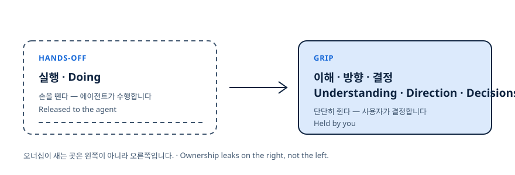
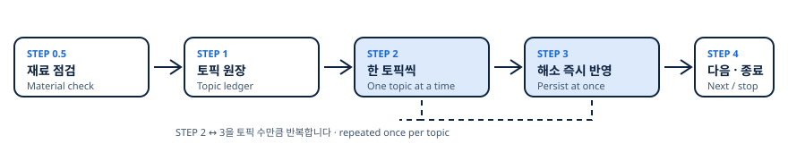
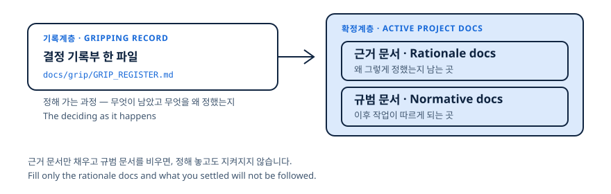

실행은 맡기고, 결정은 쥔다
AI 에이전트에게 일을 맡길 때, 우리가 놓치고 싶지 않은 단 하나
GRIP IT은 착수 전에 아직 정해지지 않은 결정을 전부 꺼내 하나씩 함께 정하고, 그 결정을 문서에 고정해 이후 AI 작업이 따르게 만드는 grip-it 스킬입니다.
mkdir -p ~/.claude/skills/grip-it
curl -fsSL https://raw.githubusercontent.com/wild-mental/grip-it-skill/main/.claude/skills/grip-it/SKILL.md \
-o ~/.claude/skills/grip-it/SKILL.md그런데 실제로 해보면, 결정까지 함께 넘어가 있습니다.
그립이 풀리는 네 장면
- 01
근거가 부족해도 AI가 그럴듯한 항목을 지어냅니다.
- 02
뜻을 모르는 용어가 섞인 제안을 그대로 승인합니다.
- 03
AI가 내놓은 보기 안에서만 고르게 됩니다.
- 04
정한 내용이 대화에 흩어져, 다음 세션의 AI가 또 제멋대로 정합니다.
결정은 분명 내 것이었는데, 결과물은 내 것이 아니게 됩니다.
이 네 장면에는 공통점이 하나 있습니다.
오너십은 실행이 아니라 결정에서 샙니다
AI에게 일을 맡길 때 오너십이 새는 곳은 실행이 아니라 결정입니다. 실행을 넘긴 자리에서 결정까지 함께 넘어가는 것이 문제의 실체입니다.

- 핸즈오프(hands-off: 실행에 손을 떼는 것)
- 이건 우리가 원하는 것입니다.
- 오너십(ownership: 작업 소유권)
- 그런데 실행에서 손을 떼면 결정까지 함께 놓치기 쉽습니다. 놓치지 않는 것이 오너십입니다.
- 그립(grip: 쥔 상태)
- 실행은 놓되 이해·방향·결정은 단단히 쥐고 있는 상태입니다.
- AI-Native
- 이 긴장을 사람이 참아서가 아니라 에이전트 절차 자체로 푸는 방식입니다.
그럼 AI가 더 많이 물어보게 하면 되지 않을까요?
더 캐묻는 방식은 이미 실패했습니다
답을 캐내려 몰아붙이면 정보는 얻어도, 사용자가 지쳐 대충 답하거나 중간에 그만둡니다.
피로는 불쾌감이 아닙니다. 답변 품질이 떨어지고 세션이 중간에 끊기는, 기능적인 손실입니다.
문제는 질문의 양이 아니라, 무엇을 추궁하느냐에 있었습니다.
사람이 아니라 문제를 붙잡습니다
왜 아직 안 정하셨나요?
이 문제의 이 지점이 아직 정해지지 않았습니다.
모든 질문에는 권장안과 근거가 함께 붙습니다. 사용자는 답을 새로 만들지 않고 확인하거나 교정하기만 하면 됩니다.
관점을 바꾸면 절차도 바뀝니다. 여섯 가지가 달라집니다.
그립을 만드는 여섯 장치
기능을 나열하지 않습니다. 앞의 네 장면에서 오너십이 새던 자리마다 장치가 하나씩 대응합니다.
| 오너십이 새는 지점 | GRIP IT의 장치 |
|---|---|
| 근거가 부족해도 그럴듯한 항목을 지어냅니다 | 재료 점검 게이트 — 기준선이 없으면 토픽을 뽑지 않습니다 |
| 전체 판을 모른 채 질문에 끌려갑니다 | 토픽 전체를 미리 보여주기 — 몇 번 문답할지 처음부터 압니다 |
| 뜻을 모르는 제안을 그대로 승인합니다 | 용어 해설 + 설명적 대화체 — 이해한 것만 결정합니다 |
| AI가 제시한 보기 안에서만 고릅니다 | 기타(직접 입력) 상시 옵션 — 내 방식으로 답할 수 있습니다 |
| 정한 내용이 대화에 흩어집니다 | 결정 기록부 — 무엇을 왜 정했는지 남습니다 |
| 다음 세션의 AI가 다시 제멋대로 정합니다 | 규범 문서에 고정 — 한 번 정한 것은 다시 협상되지 않습니다 |
에이전트는 재료를 점검하고, 선택지와 근거를 차려 놓고, 용어를 풀어 설명합니다. 결정은 사용자가 합니다.
실제로는 이렇게 흘러갑니다.
한 세션을 처음부터 끝까지
연구 설계를 맡긴 세션입니다. 네 컷이 차례로 이어지며, 이 영역에서는 아무것도 움직이지 않습니다.

아래 네 컷은 스킬의 실제 출력 형식을 그대로 인용한 것입니다.
1 재료 점검 — 기준선이 비면 게이트가 열립니다
판단에 필요한 재료를 먼저 봅니다. R1(목적)과 R2(범위)가 비어 있으면 토픽을 뽑지 않고, 두 갈래만 제시합니다.
**[재료 점검]**
| 역할 | 상태 | 근거 |
|------|------|------|
| R1 목적·성공기준 | 충족 | 연구계획서.md §1 연구질문·가설 |
| R2 범위·산출물 | 부분 | 측정 구성이 아직 정해지지 않음 |
| R3 대상·이해관계자 | 부분 | 모집단 언급만 있고 표본 정의 없음 → 첫 CORE 토픽으로 흡수 |
**[질문]** (권장안 A를 첫 옵션, 기타를 마지막 옵션)
- A) 측정 구성 자료를 보강한 뒤 다시 호출 — 가장 정확하며, 세션을 한 번 끊습니다 (권장)
- B) 지금 대화로 범위를 함께 정해 앵커 문서로 남기고 이어서 시작 — 끊김이 없고, 문답이 3~4회 늘어납니다
- 기타) 직접 입력 — 위 선택지로 표현되지 않는 방향이 있으면 그대로 적어 주세요B를 고르면 범위를 먼저 정하고, 그다음 앞으로 정할 것을 전부 펼쳐 보입니다.
2 토픽 원장 — 앞으로 몇 번인지가 여기서 보입니다
미해소 토픽을 전부 추출해 개수·분류(CORE/MINOR)·의존 순서와 함께 제시합니다. 카운터는 grep으로 찾을 수 있는 한 줄입니다.
RESOLVED: 0 / DROPPED: 0 / TOTAL: 4
- [ ] T1 | CORE | 표본 정의와 모집 방식 | depends:- | status:UNRESOLVED
- [ ] T2 | CORE | 주요 변수 측정 도구 선택 | depends:T1 | status:UNRESOLVED
- [ ] T3 | CORE | 주 분석 방법과 유의수준 | depends:T2 | status:UNRESOLVED
- [ ] T4 | MINOR | 코딩북 라벨 명명 규칙 | depends:T2 | status:UNRESOLVED그다음은 의존 순서대로 한 토픽씩입니다. 한 번에 하나만 묻습니다.
3 한 토픽 — 권장안과 근거, 그리고 마지막의 기타
선택지마다 결과가 붙고, 권장안에는 근거가 붙고, 어려운 말은 풀어 씁니다. 마지막 옵션은 언제나 직접 입력입니다.
**[진척]** RESOLVED 2 / DROPPED 0 / TOTAL 4 · 현재 토픽: T3 주 분석 방법과 유의수준
**[선택지]**
- A) 사전등록한 주분석 1개 + 탐색적 분석 분리 — 해석이 명확하고, 탐색 결과의 지위가 낮아집니다
- B) 다중비교 보정 포함 다중 주분석 — 가설을 넓게 보되, 검정력이 떨어집니다
- 기타) 직접 입력 — 위 선택지로 표현되지 않는 방향이 있으면 그대로 적어 주세요
**[권장]** A) — 참조 자료의 제약(R4)에 연구윤리 심의 일정이 있고, 사전등록 초안을 규범 문서로 쓰기로 정해져 있어 주분석을 하나로 고정하는 편이 안전합니다.
**[용어]**
- preregistration(사전등록: 분석 계획을 데이터 수집 전에 공개 등록하는 절차)
- 유의수준 — 귀무가설을 기각하는 기준이 되는 확률입니다정해지면 다음 질문으로 넘어가기 전에 문서부터 고칩니다.
4 반영 완료 — 근거 문서 · 규범 문서 · 기록부 세 줄
결정을 대화 속에만 두지 않습니다. 해소되는 즉시 세 곳에 남고, 그다음 토픽으로 넘어갑니다.
**[반영 완료]** T3 → decision: 사전등록한 주분석 1개 + 탐색적 분석 분리
- 근거 문서: 연구계획서.md §4 분석 절 갱신
- 규범 문서: 사전등록 초안에 주분석·유의수준 고정
- 기록부: GRIP_REGISTER.md (RESOLVED 3 / DROPPED 0 / TOTAL 4)
---
**[진척]** RESOLVED 3 / DROPPED 0 / TOTAL 4 · 현재 토픽: T4 코딩북 라벨 명명 규칙이 예시는 연구였습니다. 사업기획이라면, 서비스기획이라면요?
다섯 도메인에서 같은 절차
재료를 문서 이름이 아니라 역할(R1~R5)로 판단합니다. 그래서 PRD나 SRS가 없어도 됩니다.
| 재료 역할 | 사업기획 | 서비스기획 | 연구·리서치 | 일반 사무 | 소프트웨어 |
|---|---|---|---|---|---|
| R1 목적·성공기준 | 사업목표·KPI | 서비스 컨셉·목표 지표 | 연구질문·가설 | 과업지시서 목적 | 제품 목표·성공지표 |
| R2 범위·산출물 | 사업 범위·BM 캔버스 | 서비스 범위·기능 목록 | 연구 범위·측정 구성 | 과업 범위(RFP/SOW) | 기능 범위·PRD·SRS |
| R3 대상·이해관계자 | 타깃 고객·경쟁 분석 | 고객 세그먼트·JTBD | 모집단·표본 정의 | 수신처·결재선 | 사용자·이해관계자 |
| R4 제약 | 예산·법규 | 운영 역량·정책 | 연구윤리·데이터 접근권 | 예산·내부 규정 | 기술 제약·보안 요건 |
| R5 진척 | 경과보고·의사결정 로그 | 릴리즈 노트 | 선행연구·연구노트 | 회의록·결재 이력 | 이슈 트래커·ADR |
문서 이름이 아니라 역할로 판단하므로, PRD/SRS가 없어도 됩니다.
그래서 세션이 끝나면 무엇이 남을까요?
남는 것은 대화가 아니라 파일입니다
세션이 끝나면 두 계층이 남습니다. 정해 가는 과정은 한 파일에, 정해진 결과는 실제 프로젝트 문서에 남습니다.

연구의 사전등록(preregistration: 분석 계획을 데이터 수집 전에 공개 등록하는 절차)이 규범 문서가 무엇인지 가장 잘 보여 줍니다. 등록해 두면 이후 행동이 그것에 묶이고, 벗어나려면 명시적인 사유를 대야 합니다.
근거 문서만 채우고 규범 문서를 비우면, 정해 놓고도 지켜지지 않습니다.
설치는 한 파일입니다.
설치
저장소를 clone하지 않습니다. SKILL.md 한 파일만 받으면 됩니다.
mkdir -p ~/.claude/skills/grip-it
curl -fsSL https://raw.githubusercontent.com/wild-mental/grip-it-skill/main/.claude/skills/grip-it/SKILL.md \
-o ~/.claude/skills/grip-it/SKILL.md개인 범위는 작업 저장소에 파일을 추가하지 않습니다. 팀과 공유하려면 프로젝트 범위를 고르세요.
첫 사용
/grip-it— 참조할 자료와 관심 방향을 알려 주면 미해소 토픽을 전부 꺼내 보여 줍니다.- “기획서 기준으로, 데이터 설계에서 아직 안 정해진 것들 같이 정하자.”
- “오늘은 질문 5개까지만.” — 문항 수를 정해 두면 그 수에 도달할 때
BUDGET_REACHED로 끝나고, 남은 토픽은 기록부에 남습니다.
실행은 맡기고, 결정은 쥐십시오.